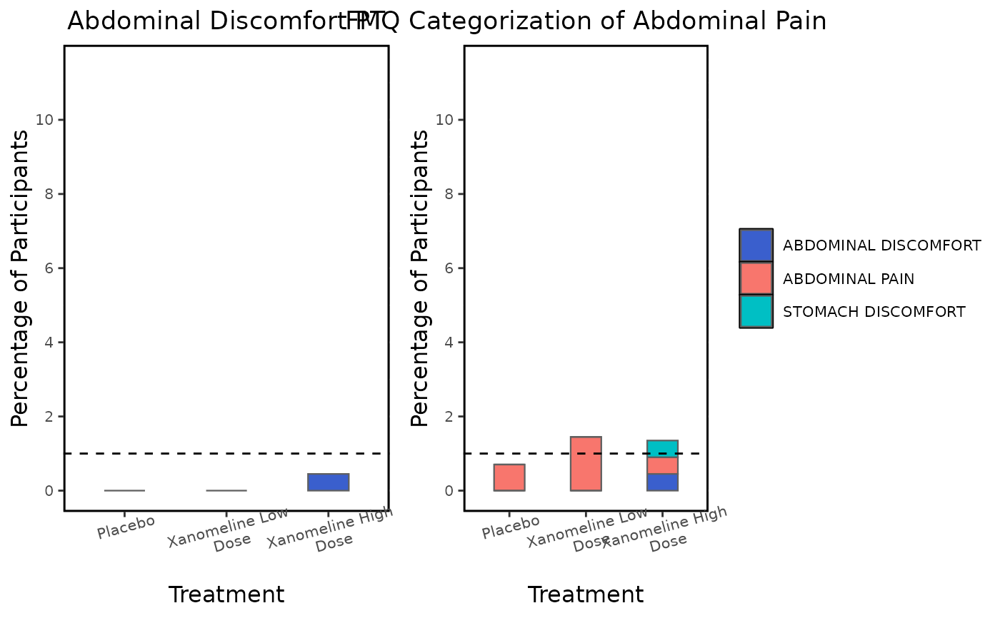

Event graphs for FDA Medical queries
Usage
event_analysis_plot(
datain,
fig.align = "h",
disp.proportion = "3~7",
ref_line = NA_integer_,
x_tickangle = 15,
pt_color = "royalblue3",
interactive = "N"
)Arguments
- datain
listobtained fromprocess_event_analysis- fig.align
Alignment of plots,
"h"for horizontal or"v"for vertical.- disp.proportion
Display proportion of plots horizontally or vertically, should sum up to
10.- ref_line
y axis position of the Horizontal reference line.
- x_tickangle
angle of
xaxisticks, default is15- pt_color
Color of bars for Preferred Terms.
- interactive
Display interactive graph
"Y"/"N"
Examples
data(adae)
data(FMQ_Consolidated_List)
## process `ADAE` with `ae_pre_processor()`
prep_ae <- adae |>
ae_pre_processor(
ae_filter = "ANY",
obs_residual = 0,
fmq_data = FMQ_Consolidated_List,
subset = "AOCCPFL == 'Y'"
)
## prepare data for plot
prep_entry <- prep_ae[["data"]] |>
mentry(
trtvar = "TRTA",
trtsort = "TRTAN",
trttotalyn = "N",
byvar = "FMQ_NAM"
)
## prepare data for plot
prep_event_analysis <- prep_entry |>
process_event_analysis(
a_subset = prep_ae$a_subset,
summary_by = "Events",
hterm = "FMQ_NAM",
ht_val = "ABDOMINAL PAIN",
ht_scope = "Narrow",
lterm = "AEDECOD",
lt_val = "ABDOMINAL DISCOMFORT",
lt_scope = "Narrow"
)
#> mcatstat success
## static plot
event_analysis_plot(
datain = prep_event_analysis,
disp.proportion = "4~6",
ref_line = 1
)

## interactive plot
event_analysis_plot(
datain = prep_event_analysis,
ref_line = 1,
interactive = "Y"
)